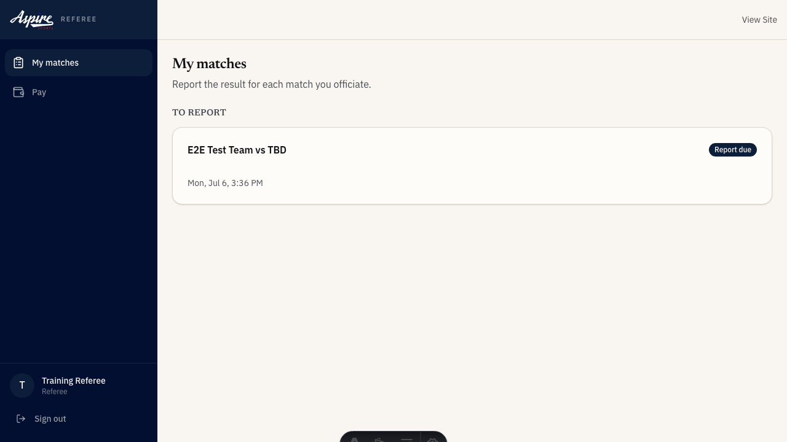
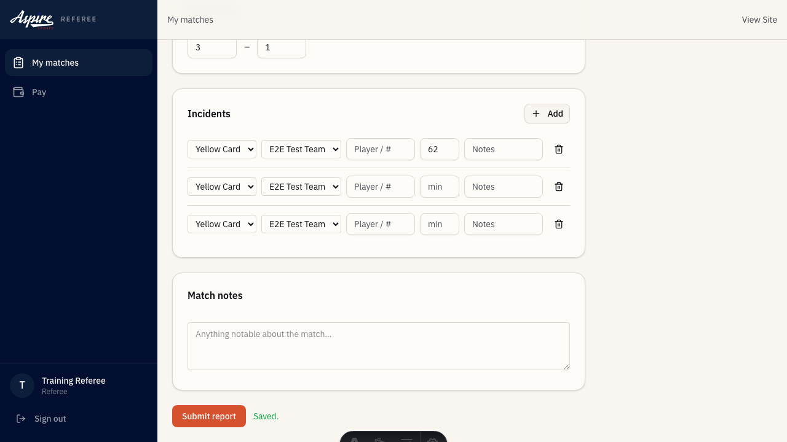

Live score update
- Procedure to be authored by the operating team. This activity is defined
- in the catalog; full step-by-step SOP content will be added in a
- follow-up PR.

Training deck
Field-side contractor responsible for match officiating and final score authority.
Responsible · act.ref_check_in
Trigger: ~30 minutes before each kickoff
Tracking: signature
Escalation: If event_lead unreachable, escalate to role.venue_manager per the standard handoff ladder; backup ref pulled from standby pool if scheduled ref no-shows.

Accountable | Responsible · act.live_score_update
Trigger: Each scoring event during the match
Tracking: counter_increment
Escalation: If the entry app fails, ref keeps a paper tally and event_lead enters the running score in batch; escalate to role.venue_manager if the issue persists across matches.
Accountable | Responsible · act.score_reporting_final
Trigger: Final whistle of each match
Tracking: signature
Escalation: If ref unable to sign, event_lead captures a co-attestation with the ref's verbal confirmation and escalates to role.venue_manager for any contested score.

Accountable | Responsible · act.timekeeping
Trigger: Match clock start at kickoff
Tracking: system_event
Escalation: If primary ref unable to operate clock, the assistant ref or event lead takes over; escalate to role.venue_manager only if the match must be paused.

Accountable | Responsible · act.ejection_logging
Trigger: Ejection issued during or immediately after the match
Tracking: form
Escalation: If ref cannot complete the form, role.event_lead captures the ref's verbal account and files; escalate to role.director for any ejection carrying multi-match suspension.

You may need to escalate to: Director, Event Lead, Venue Manager
/referee | Today's assigned matches — check in here |
/referee/matches/[gameId] | Live score entry and final score attestation |
/referee/pay | Your match pay history |